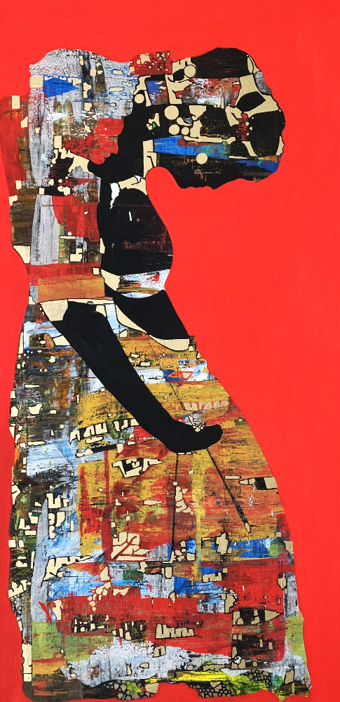

• Global Practice & Institutional Archives
A practice defined by large-scale monochromatic works, raw human portraiture, and expansive conceptual series. Held across public state repositories, international museum collections, and private foundations, the studio maintains an active archive spanning public installations, solo monograph projects, and ongoing site-specific research across Europe, Asia, and Africa.
• Photo Monograph Series • Kenya • 2008
Chronicles of Mombasa +
Faces, Moments, and the Unfiltered Spirit of East Africa


Interactive Global Footprint Radar
• 30-YEAR FLIGHT & MONOGRAPHIC RADAR • CLICK ANY PULSING NODE

Explore solo retrospectives, linguistic provenance partners, and ecological material patrons worldwide.
Harvard
USA East
USA West
USA Midwest
Vancouver
Calgary
Toronto
Ottawa
Montreal
Yukon
London
Oxford
Cambridge
Edinburgh
Zurich
Geneva
Bern
Bologna
Florence
Paris
Ljubljana
Zagreb
Lisbon
Kyiv
Bratislava
Volgograd
Tartu
Tallinn
Vaduz
Budapest
Vilnius
Longyearbyen
Oslo
Helsinki
Oulu
Aalborg
Prague
Brussels
Leuven
Warsaw
Krakow
Duszniki
Poznań
Frankfurt
Athens
Gaza
Jenin
Amman
Muscat
Abu Dhabi
Dubai
Nicosia
Damascus
Bishkek
Peshawar
Goa
Bangkok
Quezon City
Changsha
Hanoi
Kuala Lumpur
Brisbane
Sydney
Melbourne
Canberra
Apia
Suva
Port-Vila
Auckland
Georgetown
Réduit
Buenos Aires
Lješevići
Bogotá
San José
Pretoria
Johannesburg
Nairobi
Lagos
West Africa
Gaborone
Antananarivo
Kinshasa
Nassau
Pan-Africa
Nuuk
Ilulissat
City / Region
Click any gold node to inspect records...
• LIVE GLOBAL WORD ARCHIVE MATRIX • NEURO-AESTHETIC ARCHIVE
Institutional Data Provenance
Search live word records from global leadership, universities, museums, and sovereign institutions.
National Gallery of Canada (Ottawa, ON): ANKOSÉ (EVERYTHING IS CONNECTED / ALGONQUIN FRAMEWORK)
University of British Columbia & Simon Fraser University (Vancouver, BC): PACIFIC COAST ECOLOGICAL ARCHIVES & MATERIAL DIALOGUES
University of Victoria & First Peoples' Cultural Council (Victoria, BC): INDIGENOUS LINGUISTIC SOVEREIGNTY & LAND MEMORY
University of Alberta & Glenbow Museum (Calgary / Edmonton, AB): PLAINS ETHNOGRAPHIC RESEARCH & ECOLOGICAL RECOVERY
University of Toronto & Art Gallery of Ontario (Toronto, ON): CANADIAN MONOGRAPHIC ARCHIVES & TRANSCULTURAL CRITIQUE
University of Waterloo & Wilfrid Laurier University (Waterloo, ON): NEURO-AESTHETICS & COGNITIVE DYNAMICS
McGill University & Université de Montréal (Montreal, QC): BILINGUAL PHILOSOPHICAL TRADITIONS & AESTHETIC MONOGRAPHS
Yukon Arts Centre & Prince of Wales Northern Heritage Centre (Yukon / NWT): ARCTIC CONSCIOUSNESS & INDIGENOUS LAND ORAL HISTORIES
Fundación Ars TEOR/éTica & Climate Leadership (San José, Costa Rica): SYSTEMIC TRANSITION & ECOLOGICAL PARADIGMS
Universidad de los Andes (Bogotá, Colombia): SOCIOCULTURAL HISTORIOGRAPHY & SPATIAL DYNAMICS
Hunan Normal University HCTS & Museum Directorate (Changsha, China): TRANSCULTURAL POETICS & WORLDWIDE PERSPECTIVES
Chulalongkorn University (Bangkok, Thailand): SOUTHEAST ASIAN AESTHETIC HERITAGE & SPATIAL CADENCE
University of the Philippines Diliman (Quezon City): ARCHIPELAGIC CARTOGRAPHY & POST-COLONIAL IDENTITY
National University of Samoa (Faculty of Arts & Pacific Studies): STEADY / CONTENT / OPTIMISTIC
The University of the South Pacific (Suva, Fiji): SOUTH PACIFIC LITERARY TRADITIONS & IDIOSYNCRASY
Vanuatu Cultural Centre / VKS (Port-Vila, Vanuatu): LOVE (INDIVIDUAL AGENCY & RESTORATION)
University of Peshawar & Mohatta Palace Museum (Pakistan): ILAQA-E-GHAIR ETHNOGRAPHIC FIELD RESEARCH & ECOLOGICAL PACKAGING ARCHIVE
Centre for Human Rights — University of Pretoria (South Africa): SERENDIPITY
TEARS Foundation (Johannesburg, South Africa): HEGEMONY
PAWA Initiative / PAWA254 (Nairobi, Kenya): ARTIVISM
University of Lagos & Omenka Gallery (Nigeria): PEACE / RESILIENCE
Vernacular Linguistic Forum (Naija / West Africa): ODESHI / ONE-LOVE / YANGA / HUSTLE / AJO / ESUSU
Thapong Visual Arts Centre (Gaborone, Botswana): INTERPRETATION
American School of Antananarivo (Madagascar): SAMBATRA
Congo Children’s Trust (Brazzaville / Kinshasa, DRC): CONGO
Government Cultural Directorate (Nassau, The Bahamas): GRACE
Leiden University Department of African Linguistics (Netherlands): HHALHHALI (Tanzanian Iraqw Concept)
Pan-African Tribal Ethnographic Research Networks: KUUMBA (Swahili Legacy Framework)
University of Sydney (Holocaust Studies & Social Sciences): FRAILTY / MIASMA
University of Queensland Art Museum & Outer Space: SEEN / FLUX
The University of Melbourne (School of Culture & Communication): HUMANITIES
M16 Artspace (Canberra, Australia): UNGOVERNABLE
Sydney Youth Network (Australia): GLOBAL "I AM" DEPTH PSYCHOLOGY PROJECT
Greenland National Museum & Archives (Nuuk): SILA (CONSCIOUSNESS / WORLD) / ATAQQEQATIGIINNEQ
Sipineq+ Rights Directorate (Greenland): INOOQATIGIINNEQ (LIVING TOGETHER IN DIVERSITY)
The Museums in North-Greenland (Ilulissat): EQQUMIITSULIORTOQ (ARTIST / CREATING EXTRAORDINARY)
Avannaata Municipality / Mayor's Office (Greenland): UAGUT NUNARPUT (OUR LAND) / ATAQQINNINNEQ
Det Grønlandske Hus i Aalborg (Skoletjenesten, Denmark): TASSA (DECISIVE BOUNDARY / STOP)
UNICEF (New York, USA): ECOLOGICAL MATERIAL PATRONS
New York Public Library (New York, USA): ECOLOGICAL MATERIAL PATRONS
Eco-Cycle (Denver, Colorado, USA): ECOLOGICAL MATERIAL PATRONS
GENIUS Olympiad (New York, USA): ECOLOGICAL MATERIAL PATRONS
University of Providence (Great Falls, Montana, USA): ECOLOGICAL MATERIAL PATRONS
Elmira College (Elmira, New York, USA): ECOLOGICAL MATERIAL PATRONS
Georgia Institute of Technology (Atlanta, Georgia, USA): ECOLOGICAL MATERIAL PATRONS
Florida Gulf Coast University (Fort Myers, Florida, USA): ECOLOGICAL MATERIAL PATRONS
Suffolk University Gallery (Boston, Massachusetts, USA): ECOLOGICAL MATERIAL PATRONS
Blue Dragon Children's Foundation (Hanoi, Vietnam): HUMANITARIAN ART THERAPY & DEDICATED NARRATIVE ARCHIVE
University of Auckland (Dept. of Social Anthropology & Indigenous Studies, New Zealand): ETHNOGRAPHIC DIALOGUES & SOCIAL RESEARCH COLLABORATION
Te Kōngahu Museum of Waitangi & Tūhura Otago Museum (New Zealand): ECOLOGICAL MATERIAL PATRONS (LIFE OF A BOX)
From Out of the Blue Studio Gallery (Ōpunakē, Taranaki, New Zealand): RECYCLED PACKAGING MUSEUM PIECE HOLDINGS
Wellington Educational Network (New Zealand): GLOBAL "I AM" YOUTH & DEPTH PSYCHOLOGY PROJECT
UNTREF Centre for Genocide Studies (Buenos Aires, Argentina): KHURBN (HISTORICAL TRAUMA & 2027 JEWISH MUSEUM RESEARCH)
Victory Afghanistan (Illinois, USA): RESONANCE
CLEAR Global (Idaho, USA): RESILIENCE
The Phoenix (Colorado, USA): UNSUBSCRIBE
Bethany House (Baldwin, New York, USA): EMPATHY
Urgent Action Fund (San Francisco, California, USA): LIBERATION
National Art Education Association (Reston, Virginia, USA): GRATIFIED
Artists at Risk Connection - ARC (New York): RESILIENCE
Equal Justice Initiative - EJI (Montgomery, Alabama, USA): GRACE
Skirball Cultural Center (Los Angeles, California, USA): PROPINQUITY
Sinai Temple (Los Angeles, California, USA): HINENI
Institute for Art and Olfaction (Los Angeles, California, USA): SENSUAL
Jane Goodall Institute (Washington, D.C., USA): HOPE
National Public Radio - NPR (Washington, D.C., USA): TURMOIL
Center for Jewish Life – Princeton Hillel (New Jersey, USA): FLOURISHING
Hillel at Florida State University (Tallahassee, Florida, USA): BLESSING
Endangered Languages Project (Sindhi Language): MARUARA (ماروئڙا)
Harvard International Arts + Mind Lab (Baltimore, MD, USA): JOY
Harvard Dept. of Molecular & Cellular Biology (Cambridge, MA): COGNITION
Harvard Dept. of East Asian Languages & Civilizations: INEPTITUDE
Harvard Faculty of Arts & Sciences: GENOCIDE AND TRANSNATIONAL REPRESSION
Harvard Weatherhead Center for International Affairs: DISRUPTION
Harvard Academy Scholar | Weatherhead Center: CAFUNÉ
Harvard Office of the President Emeritus: DECENCY
Harvard Dept. of Anthropology: GRIEF
Harvard Dept. of Psychology: ENLIGHTENMENT
Harvard Cultural Anthropology Division: NOWHERESVILLE
Harvard Graduate School of Design (Dean's Office): XENOPHILIA
Harvard Medical School / Mass General Hospital: SPICE / SPICES
Harvard Medical School / Boston Children's Hospital: CONCERNED
Harvard NeuroBusiness Group: SATCHITANANDA
Harvard T.H. Chan School of Public Health: TOGETHER
Harvard Forest (Charles Bullard Fellowship Program): UNSURE
Harvard Forest (Outreach & Education Directorate): HOPE
Harvard Graduate School of Design (Architecture Faculty): SERENDIPITY
Harvard Faculty of Arts & Sciences: RUPTURE
Harvard Graduate School of Design (Urban Design): LUMINOUS
Harvard Graduate School of Design (Design Studies): CARE
Harvard Graduate School of Design (Regional Planning): DESPONDENT
Harvard Graduate School of Design (GSD Directorate): SUPERPOSITION
Harvard Graduate School of Design (Landscape Architecture): RESTORATION
Harvard Public Policy Mediation Directorate: SERENITY (שלווה)
Harvard Divinity School: COMPLEXITY
Harvard Law School: DILEMMA
Harvard Dept. of Philosophy & Humanities: PRAISEWORTHINESS
Harvard Gender & Sexuality Caucus: LOVE
Harvard Dept. of Art, Film, and Visual Studies: GRAFT
Harvard Dept. of History, Art & Architecture: SYMBIONTS
Harvard Dept. of Philosophy (Emerita Directorate): THINK
Harvard Graduate School of Education: METAMORPHOSIS
Harvard Democratic Knowledge Project & Allen Lab: RENOVATE
Harvard Graduate School of Education: BETTER
Harvard Graduate School of Education (Counseling Pathway): PERSISTING
Harvard Malcolm Wiener Center for Social Policy: PURPOSE
Harvard College (Office of the Dean & HKS): AMALGAMATION
Harvard Graduate School of Education: BĪ-GHARĀRĪ (بیقراری)
Harvard Dept. of Psychology: RIGAMAROLE
Yale University Dept. of Astronomy: LIMINAL
Yale University Dept. of Philosophy: RESPECT
Yale University Faculty of Arts & Sciences: AIR
Yale University Philosophy & International Affairs: JUSTICE
Yale Divinity School: BELOVED
Yale Dept. of Comparative Literature: همان پلنگ به دریایم و نهنگ به صحرا
Princeton University Dept. of Religion: ALIVE
Princeton University Dept. of Politics: COOPERATION
Columbia University Dept. of History: RACHMONES (רחمנות)
Columbia Dept. of Middle Eastern, South Asian & African Studies: ADAB
Columbia University Dept. of Political Science: COMPASSION
MIT Dept. of Philosophy & Women's and Gender Studies: HOPE
MIT Comparative Media Studies / Writing (MITHIC): INTEGRITY
Brown University Center for Middle East Studies: TROTZDEM
Brown University Dept. of History of Art & Architecture: SQUEEZE
UC Berkeley (Magnes Collection of Jewish Art & Life): MISHPOKHE (משפחה)
UC Berkeley Dept. of Linguistics: HUMBLE
UC Davis Dept. of Art & Art History: JAN (جان / Ջան)
UC Irvine (Jordan Center for Persian Studies): COURAGE
UC Irvine School of Humanities (Persian & French Culture): COMMUNITY IS THE PATIENT WORK OF MAKING ROOM
UC Irvine Armenian Studies Program: PEYVAND / ARMENI
UC San Diego Dept. of Visual Arts: DISTURBANCE
West Texas A&M University Student Body: SUCCESS
Keiko Davidson Elementary School (Texas, USA): CHEESE
Altman Siegel Gallery (San Francisco, CA, USA): SIGNS
Arizona State University Indigenous Studies: RENEWAL / MASHKIKI
Arizona State University (Herberger Institute): GRATITUDE
Arizona State University School of Art: SCALABLE
Baylor University Dept. of Sociology: ANXIOUS
Bemidji State University School of Technology, Art & Design: CONSUME
Boise State Dept. of Art, Design & Visual Studies: PRECARIOUS
Boise State University Art Department: SHADOWS
Boise State Art Jewelry & Metalsmithing Program: PERSEVERANCE
Boston University Faculty of Arts: BEMUSE
Buffalo State University Art Directorate: PROTECTIVE
Case Western Reserve Dept. of Art History & Art: EXCENTRICITY
Case Western Reserve Dept. of Art History & Art: UNFINISHED
City University of New York - CUNY: MITHRA, DAAD, PEYMAN
Cleveland State University Dept. of Art History: HOPE
Columbus State University Dept. of Art: KINDNESS
Cornell University Dept. of Human Centered Design: WITNESS
Cornell University History of Art & Visual Studies: MIND
East Tennessee State University School of Art: ENDURANCE
Emory University Dept. of Art History: RESOLUTE
George Mason University Applied Developmental Psychology: EXHAUSTION
George Washington University (Institute for Middle East Studies): ASTONISHMENT
Georgetown University Art & Museum Studies Program: ALMOST
Idaho State Dept. of Communication & Media: PENDING
Idaho State University Dept. of Art: INCREDULITY
Indiana University Bloomington (Eskenazi School): SOMNAMBULISTIC
Indiana University Bloomington (Eskenazi School): ABRACADABRA
Jewish Theological Seminary of America: LOVE
Jewish Theological Seminary Library & Talmudic Studies: RESPONSIBILITY
American Jewish University (Los Angeles, USA): AHAVAH (אהבה)
Johns Hopkins University (Ecological Design Collective): REGENERATION
Kauai Hindu Monastery (Hawaii, USA): ENSTASY
Kauai Hindu Monastery (Hawaii, USA): ALOHA
Lamar University Dept. of Art & Design: SERENDIPITY
Lamar University Dept. of Art & Design: INTERSTITIAL
Lewis-Clark State College: SOLACE
Mississippi University for Women Dept. of Art: THRESHOLD
Missouri State University Dept. of Art History: EXPECTATION
Monmouth University Dept. of Art & Design: VISCERAL
Nevada State University Dept. of English: RAHI
NYU Skirball Dept. of Hebrew & Judaic Studies: PRESENCE
NYU Skirball Dept. of Hebrew & Judaic Studies: DIALECTICAL
Northern State University School of Fine Arts: FACSIMILE
Northwestern Oklahoma State Fine Arts & Natural History Museum: ANXIETY
Northwestern University Dept. of Psychology & Education: BIODIVERSITY
Ohio University School of Art + Design: UNDERMINING
Pennsylvania State University School of Visual Arts: MOBILIZE
Reed College Dept. of Anthropology: COURAGE
Southern Utah University Dept. of Filmmaking & Art: FREEDOM
Stanford University Dept. of Linguistics: LIMPID
Stephen F. Austin State University School of Art: PETRICHOR
Swarthmore College Linguistics & Cognitive Science: MIND HAS NO END
Temple University Dept. of Religion & Jewish Studies: AWRY
Texas Tech University School of Art: FRACKED
University of Alaska Anchorage (ISER): TREPIDATION
University of Chicago Dept. of History & South Asian Languages: WAR-WEARY
University of Chicago Dept. of Art History: AND
University of Colorado Boulder (Artnauts Directorate): ARTNAUTS
University of Hawaii at Manoa Dept. of Art & Art History: SPENT
University of Hawaii at Manoa Dept. of Art & Art History: ZÀO (造)
University of Hawaii at Manoa Dept. of Art & Art History: HOT
University of Kentucky School of Art & Visual Studies: GRIEF
University of Maine at Augusta Dept. of Art: BLOOM
University of Nevada, Las Vegas Dept. of Sociology: TOXIC
University of Nevada, Reno Dept. of Philosophy & Neuroscience: ABIDES
University of New Hampshire Dept. of Art & Art History: ARDOR
University of New Mexico Dept. of Philosophy: EXHAUSTION
University of Pittsburgh Dept. of Linguistics: DUDE
University of Pittsburgh Dept. of Studio Arts: GRATITUDE
University of Pittsburgh Dept. of Philosophy: INFERENCE
University of Rochester Dept. of Art & Art History: LONGING
University of South Florida School of Art & Art History: FORGIVENESS
University of Southern Maine Dept. of Sociology & Criminology: DESSICATE
University of Texas at Austin Dept. of Middle Eastern Studies: SEKANJEBIN
University of Texas at Austin Persian Program: همهچیز تمام میشود تو تمام نمیشوی
University of Utah Dept. of Philosophy: MEANING
University of Utah Dept. of Art & Art History: INSTABILITY
University of Washington Dept. of Anthropology & Burke Museum: ARINARTUQ
University of Washington Dept. of Sociology: BURGEONING
University of Washington 3D4M Program: FATHOM
University of Washington Center for Study of the Pacific NW: HOMEWATERS
University of Washington Research & Neuroscience: IMAGINE
University of Wisconsin–Green Bay Dept. of Art & Design: NO
University of Wisconsin–Madison Dept. of Sociology: COLORFUL
University of Wisconsin–Milwaukee (Ojibwe Language Program): JIIKENDAAGOZI / SCEITIMÍNI
Vanderbilt University Dept. of History of Art & Architecture: CONNECTION
Washington State University (Pollart Center for Arts): PERSPICACIOUS
Wesleyan University Dept. of Philosophy: GRACE
West Liberty University Dept. of Art: VALUED
Wichita State University School of Art & Design: COLLAPSE
Willamette University Dept. of Art History: COUNTER-GENOCIDAL
Winthrop University Dept. of Fine Arts: COMPASSION
University of Bologna, Dip. di Filosofia (Bologna, Italy): RESONANCE
European University Institute (Florence, Italy): SOLIDARITY
Arts au Pluriailes (Guadeloupe, France): SERENDIPITY
IDDRI (Paris, France): HUMAN(E)
Culture & Free Thought Association (Gaza, Palestine): صَبابة
The Freedom Theatre (Jenin Camp, Palestine): SUMUD
University of Iceland (Reykjavík, Iceland): ÓÞOL / BLESSUN
University of Guyana (Georgetown): QUIETUDE
The University of Jordan (Amman): BLESSING (البركة) / UNCERTAINTY
University of Mauritius (Reduit): EMPATHY
Sultan Qaboos University (Muscat, Oman): ALLAH / BECOMING
KU Leuven & Vrije Universiteit Brussel (Belgium): BUFFERWORLD / GRATITUDE
Museum of Papermaking, Warsaw & Krakow (Poland): NEON GREEN / BREEZE / HAPAX
University of Ljubljana & Primorska (Slovenia): SHAKING / INDECISION
University of Zagreb (Croatia): DECEIVED
Athens School of Fine Arts (Greece): OBLIVION
Masterwork Provenance Ledger

• Words Project • Featured Masterwork
Equanimity / Gelassenheit

• Life of a Box • Ecological Sculpture
Monumental Packaging Sculpture

• Voices of the Land • Sacred Indigenous Knowledge
Mowicha (Living Wisdom)
Surface & Texture Detail
• SURFACE & TEXTURE • MACRO CANVAS STUDY
Tactile Depth & Pigment Density
Click & drag to pan across the texture. Scroll mouse wheel to zoom in/out.